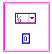

Clusters cannot include both static and dynamic data. For example, in the following illustration, the cluster includes a constant that is static and an FPGA I/O constant that is dynamic.
To correct this error, remove either the static or dynamic data from the cluster.